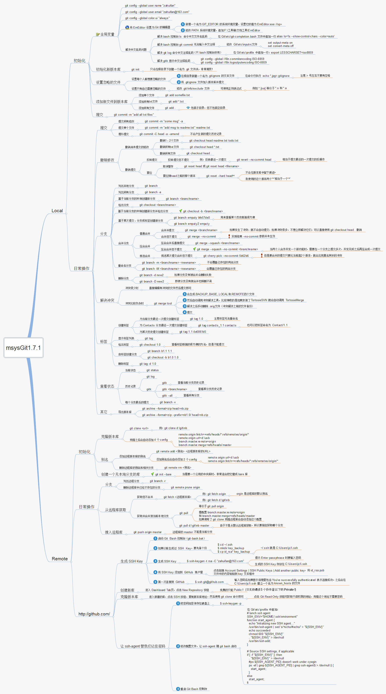
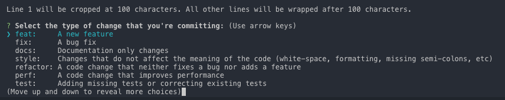

Git的奇技淫巧
Posted
Git常用命令集合，Fork于tips项目
Git是一个 “分布式版本管理工具”，简单的理解版本管理工具：大家在写东西的时候都用过 “回撤” 这个功能，但是回撤只能回撤几步，假如想要找回我三天之前的修改，光用 “回撤” 是找不回来的。而 “版本管理工具” 能记录每次的修改，只要提交到版本仓库，你就可以找到之前任何时刻的状态（文本状态）。
下面的内容就是列举了常用的 Git 命令和一些小技巧，可以通过 “页面内查找” 的方式进行快速查询：Ctrl/Command+f。
开卷必读
如果之前未使用过 Git，可以学习 Git 小白教程入门
- 一定要先测试命令的效果后，再用于工作环境中，以防造成不能弥补的后果！到时候别拿着砍刀来找我
- 所有的命令都在
git version 2.7.4 (Apple Git-66)下测试通过 - 统一概念：
- 工作区：改动（增删文件和内容）
- 暂存区：输入命令：
git add 改动的文件名，此次改动就放到了 ‘暂存区’ - 本地仓库(简称：本地)：输入命令：
git commit 此次修改的描述，此次改动就放到了 ’本地仓库’，每个 commit，我叫它为一个 ‘版本’。 - 远程仓库(简称：远程)：输入命令：
git push 远程仓库，此次改动就放到了 ‘远程仓库’（GitHub 等) - commit-id：输出命令：
git log，最上面那行commit xxxxxx，后面的字符串就是 commit-id
目录
- 展示帮助信息
- 回到远程仓库的状态
- 重设第一个commit
- 展示工作区和暂存区的不同
- 展示暂存区和最近版本的不同
- 展示暂存区、工作区和最近版本的不同
- 快速切换到上一个分支
- 删除已经合并到 master 的分支
- 展示本地分支关联远程仓库的情况
- 关联远程分支
- 列出所有远程分支
- 列出本地和远程分支
- 查看远程分支和本地分支的对应关系
- 远程删除了分支本地也想删除
- 创建并切换到本地分支
- 从远程分支中创建并切换到本地分支
- 删除本地分支
- 删除远程分支
- 重命名本地分支
- 查看标签
- 查看标签详细信息
- 本地创建标签
- 推送标签到远程仓库
- 删除本地标签
- 删除远程标签
- 切回到某个标签
- 放弃工作区的修改
- 恢复删除的文件
- 以新增一个 commit 的方式还原某一个 commit 的修改
- 回到某个 commit 的状态，并删除后面的 commit
- 修改上一个 commit 的描述
- 查看 commit 历史
- 显示本地更新过 HEAD 的 git 命令记录
- 修改作者名
- 修改远程仓库的 url
- 增加远程仓库
- 列出所有远程仓库
- 查看两个星期内的改动
- 把 A 分支的某一个 commit，放到 B 分支上
- 给 git 命令起别名
- 存储当前的修改，但不用提交 commit
- 保存当前状态，包括 untracked 的文件
- 展示所有 stashes
- 回到某个 stash 的状态
- 回到最后一个 stash 的状态，并删除这个 stash
- 删除所有的 stash
- 从 stash 中拿出某个文件的修改
- 展示所有 tracked 的文件
- 展示所有 untracked 的文件
- 展示所有忽略的文件
- 强制删除 untracked 的文件
- 强制删除 untracked 的目录
- 展示简化的 commit 历史
- 查看某段代码是谁写的
- 把某一个分支到导出成一个文件
- 从包中导入分支
- 执行 rebase 之前自动 stash
- 从远程仓库根据 ID，拉下某一状态，到本地分支
- 详细展示一行中的修改
- 清除
.gitignore文件中记录的文件 - 展示所有 alias 和 configs
- 展示忽略的文件
- commit 历史中显示 Branch1 有的，但是 Branch2 没有 commit
- 在 commit log 中显示 GPG 签名
- 删除全局设置
- 新建并切换到新分支上，同时这个分支没有任何 commit
- 展示任意分支某一文件的内容
- clone 下来指定的单一分支
- clone 最新一次提交
- 忽略某个文件的改动
- 忽略文件的权限变化
- 以最后提交的顺序列出所有 Git 分支
- 在 commit log 中查找相关内容
- 把暂存区的指定 file 放到工作区中
- 强制推送
- git 配置 http 和 socks 代理
- git 配置 ssh 代理
- 一图详解
- 优雅的提交Commit信息
- 联系我
展示帮助信息
git help -g
The command output as below:
The common Git guides are:
attributes Defining attributes per path
cli Git command-line interface and conventions
core-tutorial A Git core tutorial for developers
cvs-migration Git for CVS users
diffcore Tweaking diff output
everyday A useful minimum set of commands for Everyday Git
glossary A Git Glossary
hooks Hooks used by Git
ignore Specifies intentionally untracked files to ignore
modules Defining submodule properties
namespaces Git namespaces
repository-layout Git Repository Layout
revisions Specifying revisions and ranges for Git
tutorial A tutorial introduction to Git
tutorial-2 A tutorial introduction to Git: part two
workflows An overview of recommended workflows with Git
'git help -a' and 'git help -g' list available subcommands and some concept guides. See 'git help <command>' or 'git help <concept>' to read about a specific subcommand or concept.
回到远程仓库的状态
抛弃本地所有的修改，回到远程仓库的状态。
git fetch --all && git reset --hard origin/master
重设第一个 commit
也就是把所有的改动都重新放回工作区，并清空所有的 commit，这样就可以重新提交第一个 commit 了
git update-ref -d HEAD
展示工作区和暂存区的不同
输出工作区和暂存区的 different (不同)。
git diff
还可以展示本地仓库中任意两个 commit 之间的文件变动：
git diff <commit-id> <commit-id>
展示暂存区和最近版本的不同
输出暂存区和本地最近的版本 (commit) 的 different (不同)。
git diff --cached
展示暂存区、工作区和最近版本的不同
输出工作区、暂存区 和本地最近的版本 (commit) 的 different (不同)。
git diff HEAD
快速切换到上一个分支
git checkout -
删除已经合并到 master 的分支
git branch --merged master | grep -v '^\*\| master' | xargs -n 1 git branch -d
展示本地分支关联远程仓库的情况
git branch -vv
关联远程分支
关联之后，git branch -vv 就可以展示关联的远程分支名了，同时推送到远程仓库直接：git push，不需要指定远程仓库了。
git branch -u origin/mybranch
或者在 push 时加上 -u 参数
git push origin/mybranch -u
列出所有远程分支
-r 参数相当于：remote
git branch -r
列出本地和远程分支
-a 参数相当于：all
git branch -a
查看远程分支和本地分支的对应关系
git remote show origin
远程删除了分支本地也想删除
git remote prune origin
创建并切换到本地分支
git checkout -b <branch-name>
从远程分支中创建并切换到本地分支
git checkout -b <branch-name> origin/<branch-name>
删除本地分支
git branch -d <local-branchname>
删除远程分支
git push origin --delete <remote-branchname>
或者
git push origin :<remote-branchname>
重命名本地分支
git branch -m <new-branch-name>
查看标签
git tag
展示当前分支的最近的 tag
git describe --tags --abbrev=0
查看标签详细信息
git tag -ln
本地创建标签
git tag <version-number>
默认 tag 是打在最近的一次 commit 上，如果需要指定 commit 打 tag：
$ git tag -a <version-number> -m "v1.0 发布(描述)" <commit-id>
推送标签到远程仓库
首先要保证本地创建好了标签才可以推送标签到远程仓库：
git push origin <local-version-number>
一次性推送所有标签，同步到远程仓库：
git push origin --tags
删除本地标签
git tag -d <tag-name>
删除远程标签
删除远程标签需要先删除本地标签，再执行下面的命令：
git push origin :refs/tags/<tag-name>
切回到某个标签
一般上线之前都会打 tag，就是为了防止上线后出现问题，方便快速回退到上一版本。下面的命令是回到某一标签下的状态：
git checkout -b branch_name tag_name
放弃工作区的修改
git checkout <file-name>
放弃所有修改：
git checkout .
恢复删除的文件
git rev-list -n 1 HEAD -- <file_path> #得到 deleting_commit
git checkout <deleting_commit>^ -- <file_path> #回到删除文件 deleting_commit 之前的状态
以新增一个 commit 的方式还原某一个 commit 的修改
git revert <commit-id>
回到某个 commit 的状态，并删除后面的 commit
和 revert 的区别：reset 命令会抹去某个 commit id 之后的所有 commit
git reset <commit-id> #默认就是-mixed参数。
git reset –mixed HEAD^ #回退至上个版本，它将重置HEAD到另外一个commit,并且重置暂存区以便和HEAD相匹配，但是也到此为止。工作区不会被更改。
git reset –soft HEAD~3 #回退至三个版本之前，只回退了commit的信息，暂存区和工作区与回退之前保持一致。如果还要提交，直接commit即可
git reset –hard <commit-id> #彻底回退到指定commit-id的状态，暂存区和工作区也会变为指定commit-id版本的内容
修改上一个 commit 的描述
如果暂存区有改动，同时也会将暂存区的改动提交到上一个 commit
git commit --amend
查看 commit 历史
git log
查看某段代码是谁写的
blame 的意思为‘责怪’，你懂的。
git blame <file-name>
显示本地更新过 HEAD 的 git 命令记录
每次更新了 HEAD 的 git 命令比如 commint、amend、cherry-pick、reset、revert 等都会被记录下来（不限分支），就像 shell 的 history 一样。 这样你可以 reset 到任何一次更新了 HEAD 的操作之后，而不仅仅是回到当前分支下的某个 commit 之后的状态。
git reflog
修改作者名
git commit --amend --author='Author Name <email@address.com>'
修改远程仓库的 url
git remote set-url origin <URL>
增加远程仓库
git remote add origin <remote-url>
列出所有远程仓库
git remote
查看两个星期内的改动
git whatchanged --since='2 weeks ago'
把 A 分支的某一个 commit，放到 B 分支上
这个过程需要 cherry-pick 命令，参考
git checkout <branch-name> && git cherry-pick <commit-id>
给 git 命令起别名
简化命令
git config --global alias.<handle> <command>
比如：git status 改成 git st，这样可以简化命令
git config --global alias.st status
存储当前的修改，但不用提交 commit
详解可以参考廖雪峰老师的 git 教程
git stash
保存当前状态，包括 untracked 的文件
untracked 文件：新建的文件
git stash -u
展示所有 stashes
git stash list
回到某个 stash 的状态
git stash apply <stash@{n}>
回到最后一个 stash 的状态，并删除这个 stash
git stash pop
删除所有的 stash
git stash clear
从 stash 中拿出某个文件的修改
git checkout <stash@{n}> -- <file-path>
展示所有 tracked 的文件
git ls-files -t
展示所有 untracked 的文件
git ls-files --others
展示所有忽略的文件
git ls-files --others -i --exclude-standard
强制删除 untracked 的文件
可以用来删除新建的文件。如果不指定文件文件名，则清空所有工作的 untracked 文件。clean 命令，注意两点：
1. clean 后，删除的文件无法找回
2. 不会影响 tracked 的文件的改动，只会删除 untracked 的文件
git clean <file-name> -f
强制删除 untracked 的目录
可以用来删除新建的目录，注意:这个命令也可以用来删除 untracked 的文件。详情见上一条
git clean <directory-name> -df
展示简化的 commit 历史
git log --pretty=oneline --graph --decorate --all
把某一个分支到导出成一个文件
git bundle create <file> <branch-name>
从包中导入分支
新建一个分支，分支内容就是上面 git bundle create 命令导出的内容
git clone repo.bundle <repo-dir> -b <branch-name>
执行 rebase 之前自动 stash
git rebase --autostash
从远程仓库根据 ID，拉下某一状态，到本地分支
git fetch origin pull/<id>/head:<branch-name>
详细展示一行中的修改
git diff --word-diff
清除 gitignore 文件中记录的文件
git clean -X -f
展示所有 alias 和 configs
注意： config 分为：当前目录（local）和全局（golbal）的 config，默认为当前目录的 config
git config --local --list (当前目录)
git config --global --list (全局)
展示忽略的文件
git status --ignored
commit 历史中显示 Branch1 有的，但是 Branch2 没有 commit
git log Branch1 ^Branch2
在 commit log 中显示 GPG 签名
git log --show-signature
删除全局设置
git config --global --unset <entry-name>
新建并切换到新分支上，同时这个分支没有任何 commit
相当于保存修改，但是重写 commit 历史
git checkout --orphan <branch-name>
展示任意分支某一文件的内容
git show <branch-name>:<file-name>
clone 下来指定的单一分支
git clone -b <branch-name> --single-branch https://github.com/user/repo.git
clone 最新一次提交
只会 clone 最近一次提交，将减少 clone 时间
git clone --depth=1 https://github.com/user/repo.git
忽略某个文件的改动
关闭 track 指定文件的改动，也就是 Git 将不会在记录这个文件的改动
git update-index --assume-unchanged path/to/file
恢复 track 指定文件的改动
git update-index --no-assume-unchanged path/to/file
忽略文件的权限变化
不再将文件的权限变化视作改动
git config core.fileMode false
以最后提交的顺序列出所有 Git 分支
最新的放在最上面
git for-each-ref --sort=-committerdate --format='%(refname:short)' refs/heads/
在 commit log 中查找相关内容
通过 grep 查找，given-text：所需要查找的字段
git log --all --grep='<given-text>'
把暂存区的指定 file 放到工作区中
不添加参数，默认是 -mixed
git reset <file-name>
强制推送
git push -f <remote-name> <branch-name>
git 配置 http 和 socks 代理
git config --global https.proxy 'http://127.0.0.1:8001' # 适用于 privoxy 将 socks 协议转为 http 协议的 http 端口
git config --global http.proxy 'http://127.0.0.1:8001'
git config --global socks.proxy "127.0.0.1:1080"
git 配置 ssh 代理
$ cat ~/.ssh/config
Host gitlab.com
ProxyCommand nc -X 5 -x 127.0.0.1:1080 %h %p # 直接使用 shadowsocks 提供的 socks5 代理端口
Host github.com
ProxyCommand nc -X 5 -x 127.0.0.1:1080 %h %p
一图详解

优雅的提交Commit信息
主要有以下组成
- 标题行: 必填, 描述主要修改类型和内容
- 主题内容: 描述为什么修改, 做了什么样的修改, 以及开发的思路等等
- 页脚注释: 放 Breaking Changes 或 Closed Issues
常用的修改项
- type: commit 的类型
- feat: 新特性
- fix: 修改问题
- refactor: 代码重构
- docs: 文档修改
- style: 代码格式修改, 注意不是 css 修改
- test: 测试用例修改
- chore: 其他修改, 比如构建流程, 依赖管理.
- scope: commit 影响的范围, 比如: route, component, utils, build…
- subject: commit 的概述
- body: commit 具体修改内容, 可以分为多行
- footer: 一些备注, 通常是 BREAKING CHANGE 或修复的 bug 的链接.
使用Commitizen代替 git commit
可以使用cz-cli工具代替 git commit
全局安装
npm install -g commitizen cz-conventional-changelog
echo '{ "path": "cz-conventional-changelog" }' > ~/.czrc
全局安装后使用 git cz 代替 git commit就可以了,如下图

作者: 削微寒